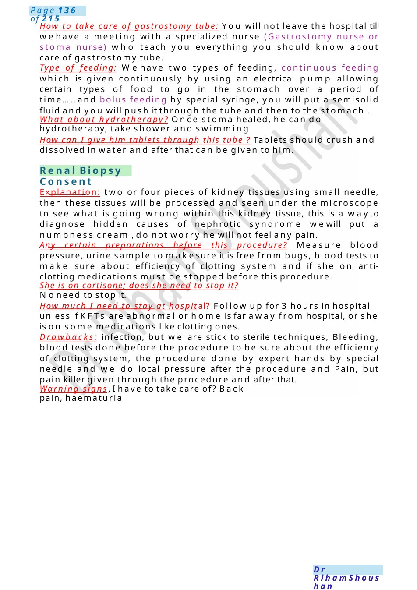

Renal Biopsy Consent
How to take care of gastrostomy tube: You will not leave the hospital till wehave a meeting with a specialized nurse (Gastrostomy nurse or stoma nurse) who teach you everything you should know about care of gastrostomy tube. Type of feeding: Wehave two types of feeding, continuous feeding which is given continuously by using an electrical pump allowing certain types of food to go in the stomach over a period of time.....and bolus feeding by special syringe, you will put a semisolid fluid and you will push it through the tube and then to the stomach .
Scenario Summary
How to take care of gastrostomy tube: You will not leave the hospital till wehave a meeting with a specialized nurse (Gastrostomy nurse or stoma nurse) who teach you everything you should know about care of gastrostomy tube. Type of feeding: Wehave two types of feeding, continuous feeding which is given continuously by using an electrical pump allowing certain types of food to go in the stomach over a period of time.....and bolus feeding by special syringe, you will put a semisolid fluid and you will push it through the tube and then to the stomach .
Full Original Scenario

Renal Biopsy Consent
How to take care of gastrostomy tube: You will not leave the hospital till wehave a meeting with a specialized nurse (Gastrostomy nurse or stoma nurse) who teach you everything you should know about care of gastrostomy tube.
Type of feeding: Wehave two types of feeding, continuous feeding which is given continuously by using an electrical pump allowing certain types of food to go in the stomach over a period of time.....and bolus feeding by special syringe, you will put a semisolid fluid and you will push it through the tube and then to the stomach .
What about hydrotherapy? Once stoma healed, he can do hydrotherapy, take shower and swimming.
How can I give him tablets through this tube ? Tablets should crush and dissolved in water and after that can be given to him.
Explanation: two or four pieces of kidney tissues using small needle, then these tissues will be processed and seen under the microscope to see what is going wrong within this kidney tissue, this is a wayto diagnose hidden causes of nephrotic syndrome wewill put a numbness cream , do not worry he will not feel any pain.
Any certain preparations before this procedure? Measure blood pressure, urine sample to makesure it is free from bugs, blood tests to make sure about efficiency of clotting system and if she on anti- clotting medications must be stopped before this procedure.
She is on cortisone; does she need to stop it? Noneed to stop it.
How much I need to stay at hospital? Follow up for 3 hours in hospital unless if KFTs are abnormal or home is far away from hospital, or she is on some medications like clotting ones.
Drawbacks: infection, but we are stick to sterile techniques, Bleeding, blood tests done before the procedure to be sure about the efficiency of clotting system, the procedure done by expert hands by special needle and we do local pressure after the procedure and Pain, but pain killer given through the procedure and after that.
Warning signs, I have to take care of? Back pain, haematuria

Infantile Colic
MRCPCHCommunication Scenario – Infant Colic Counselling
Candidate Instructions:
Youare the paediatric trainee in the outpatient clinic.
Youare asked to speak with Ms.Amira, mother of Noha, a 2-month-old baby whocries excessively. Mother is worried that Nohahas colic and has already changed her to a soymilk formula.
Your tasks are to:
- Explore the history briefly
- Explain infantile colic
- Reassure appropriately
- Counsel regarding management
- Explain whysoy formula is not recommended and discuss possible drawbacks
- Address concerns empathetically
Introduction
Doctor:
Hello Ms.Amira, I’m Dr. Ahmed, one of the paediatric doctors today.
I understand you’re worried because Nohahas been crying a lot. That must be very stressful for you.